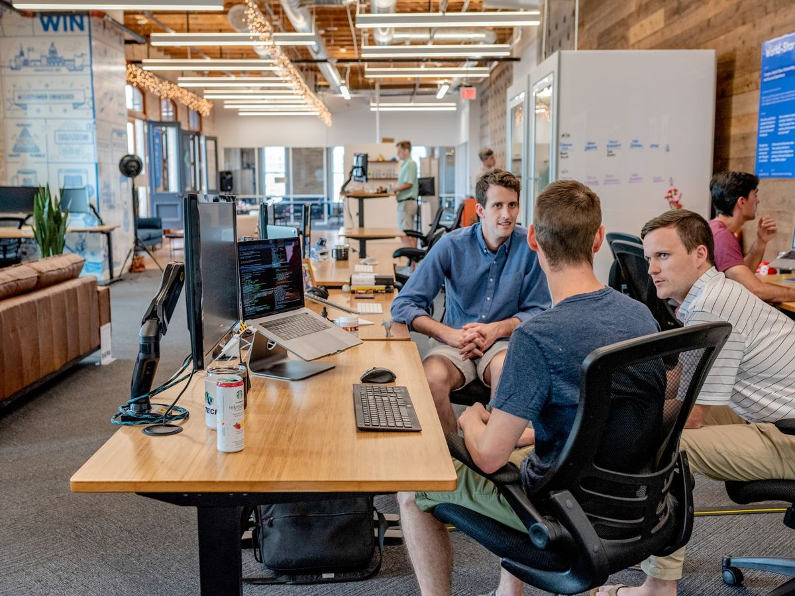

Què fem
Ens adaptem al moment i a les necessitats de cada entitat, des de la idea fins a la justificació final.
Necessites assessorament? Reserva mitja hora i veiem com et podem ajudar
Un acompanyament a la mida de cada entitat
No treballem amb paquets tancats. Combinem consultoria, assessorament, formació i planificació segons el que necessita el projecte. Dins d’aquest acompanyament, fem:

-
Subvencions i ajutsCalendari anual de convocatòries, formulació, redacció, gestió i justificació.
-
Licitacions públiquesAssessorament per preparar i presentar ofertes a licitacions.
-
Planificació estratègicaPla estratègic per crear, consolidar o fer créixer l’entitat.
-
Gestió economicofinanceraAssessorament i formació en gestió econòmica i financera.
-
Assessorament puntualSuport en qualsevol moment del cicle d’un projecte.
-
FormacióFormacions especialitzades i a mida per a equips i juntes.
Com treballem
Un procés proper i personalitzat, amb una persona de referència de principi a fi.
-
 1Escoltem Primera reunió per entendre l’entitat, el projecte i el moment en què es troba.
1Escoltem Primera reunió per entendre l’entitat, el projecte i el moment en què es troba. -
 2Proposem Una proposta adaptada, amb objectius, calendari i persona de referència.
2Proposem Una proposta adaptada, amb objectius, calendari i persona de referència. -
 3Treballem junts Sessions periòdiques i seguiment amb el nostre programa Eficiència.
3Treballem junts Sessions periòdiques i seguiment amb el nostre programa Eficiència. -
 4Revisem Valorem resultats i planifiquem els passos següents amb l’equip.
4Revisem Valorem resultats i planifiquem els passos següents amb l’equip.
En què et podem ajudar?
Siguis qui siguis, el que ens importa és el repte que tens entre mans. Tant si ets una associació, una fundació o una cooperativa com si treballes en un ajuntament o estàs posant en marxa el teu propi projecte, t’ajudem a trobar la manera de tirar-lo endavant.

-
Necessites donar un impuls al teu projecte?
-
No saps com identificar les subvencions que et poden encaixar?
-
Et costa prendre decisions perquè no tens clara la situació economicofinancera?
-
Vols presentar-te a una licitació i no saps per on començar?
-
Tens una idea, però no saps si és viable?
-
Has de justificar una subvenció i se’t fa una muntanya?
També impulsem projectes i eines pròpies
A més d’acompanyar altres entitats, posem en marxa programes propis per donar resposta a necessitats que detectem en el dia a dia. [Paràgraf explicatiu pendent de redactar]